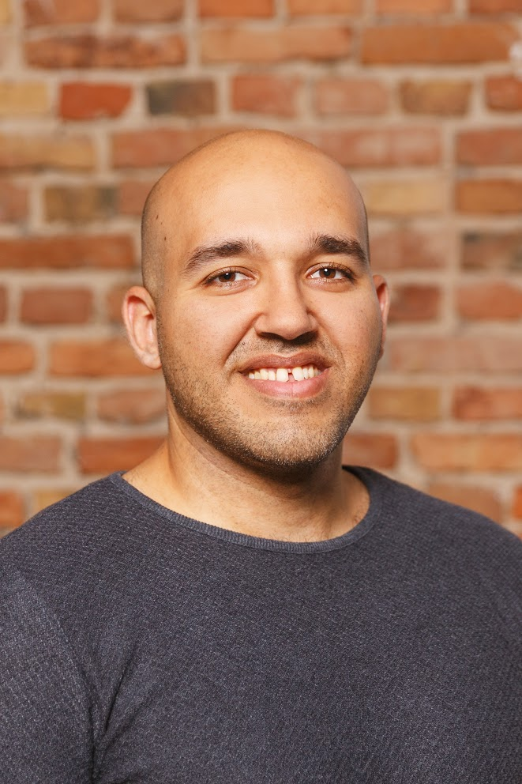

Ashraf Hamza
Summary
Originally from Egypt and living in Japan since 2011. I have been working in Ad tech industry since 2016.
Having the experience of working at Adways (a well-known Japanese advertising agency), I built a better understanding of the Ad tech industry in Japan, and I learnt how important it is for clients to achieve their goals & KPIs.
Followed by 4 years at Adjust (the mobile ads measurement company) working closely with app developer clients, tens of ad tech partners and agencies as the team lead of the technical support team in Japan and INSEA regions. I established a solid know-how on how to retain clients by delivering outstanding problem-solving support, maintain the same level of excellency across APAC region, and build strong client facing team.
My role at Flux, was to build up the entire App business from scratch. Starting by identifying the entry point to the app industry, establish business operation and functions, and build up the app team to grow the new-born SaaS business.
Flux is a Japanese AdTech start-up. And I am the 1st hire of Flux’s app team.
Education
-
BSC / Tourism from Alexandria Universary, EGYPT | 2001 - 2005
- 4 years study specialized in Egyptology, economy, foreign languages (English/ Japanese) and tourism industry.
Work Experience
Product Lead - Japan | Flux Inc.
(Nov/2022 - April/2024)
- Led research and planning for mobile app solutions.
- Established goals and go-to-market strategy for the app business.
- Interviewed clients and partners to assess market demands and solutions.
- Conducted product market fit pitches, market sizing, and profitability analysis.
- Developed an in-depth knowledge library for app products, including how-to manuals.
- Delivered educational workshops and Q&A sessions for sales and customer success teams.
- Negotiated partnerships with global tech companies like Applovin, Adjust, Magnite, GeoEdge, Pangle, App Samurai, and Smaato.
- Collaborated with internal teams across development, product, and sales.
- Main Project: Programmatic ad monetization solution (Prebid Header Bidding SDK)
Head of Operations - Japan | GumGum Inc.
(Jan/2022 - July/2022)
- Managed a 10-member operations team in Japan, including account managers, ad operations specialists, creative designers, and programmatic solution specialists.
- Collaborated with HR to create coaching and career-path plans, implementing them through weekly 1:1s and casual check-ins.
- Oversaw the implementation of GumGum’s advertising products and technologies, supporting both direct and programmatic campaigns.
- Worked closely with leadership teams from HQ in LA and regional HQ in Sydney to incorporate best practices and keep all parties updated on status and issues, adapting solutions for the Japanese market.
- Identified market needs to optimize operational excellence and customer service.
Team Lead Technical Account Management | Adjust
(Oct/2017 – Dec/2021)
- Led a team of 15 account managers across Japan, Korea, India, and SEA, overseeing project coordination and training programs.
- Collaborated closely with regional sales and technical support leadership.
- Supported medium and large-scale Japanese and global clients, resolving technical challenges and maximizing product usage to enhance satisfaction and reduce churn.
- Provided tailored guidance and consultation to top market players across industries like Gaming, E-commerce, News, Telecom, Dating, Comics, Recruitment, Banking, and VOD.
- Worked daily with the customer success team to define client consultation strategies, including calls, QBRs, technical inquiries, and updates.
- Collected client feedback and feature requests, sharing with product and tech teams to drive new solutions.
- Participated in new feature development by onboarding beta clients and coordinating implementation with internal teams.
- Acted as a subject matter expert, advising on complex issues, attending critical client meetings, and speaking at seminars and educational workshops.
Digital Advertising Operation | Adways Inc
(Feb/2016 - Sep/2017)
- Worked closely with sales team from proposal to deal closing by providing customized advertising strategy for client’s campaigns.
- Planned and managing inbound/outbound digital ads at several media platforms with focus on SNS (Facebook, Twitter, Google, nend, imobile, Amoad and etc.).
- Managed digital ads with average monthly budget of 20M¥.
Skills
-
Language Skills
- Japanese - Fluent (N1)
- English - Fluent
- Arabic - Native
-
Technical Skills
- Basic understanding of programming languages:
- Full Stack Web Dev.:
- HTML, CSS, JavaScript
- SQL, PostgreSQL
- node.js, React.js
- Python
- Mobile App Dev.:
- Advanced understanding of e-commerce platforms:
- Advanced understanding of performance and Programmatic advertising, both web and mobile apps.
-
Soft Skills
-
Leadership: Managed and developed cross-functional teams.
-
Client Relations: Built strong client partnerships and delivered tailored solutions.
-
Cross-Cultural Communication: Worked with global and local teams effectively.
-
Problem-Solving: Resolved complex issues and improved client satisfaction.
-
Strategic Planning: Set goals and executed business strategies.
-
Coaching: Mentored teams and conducted training sessions.
-
Negotiation: Secured partnerships with global tech companies.
-
Adaptability: Thrived in dynamic and fast-paced environments.
Let's get in touch!
Thank you very much for taking the time to read through my resume.
If you are interested in hiring me, please contact me through my info in the link below.
Contact Me
